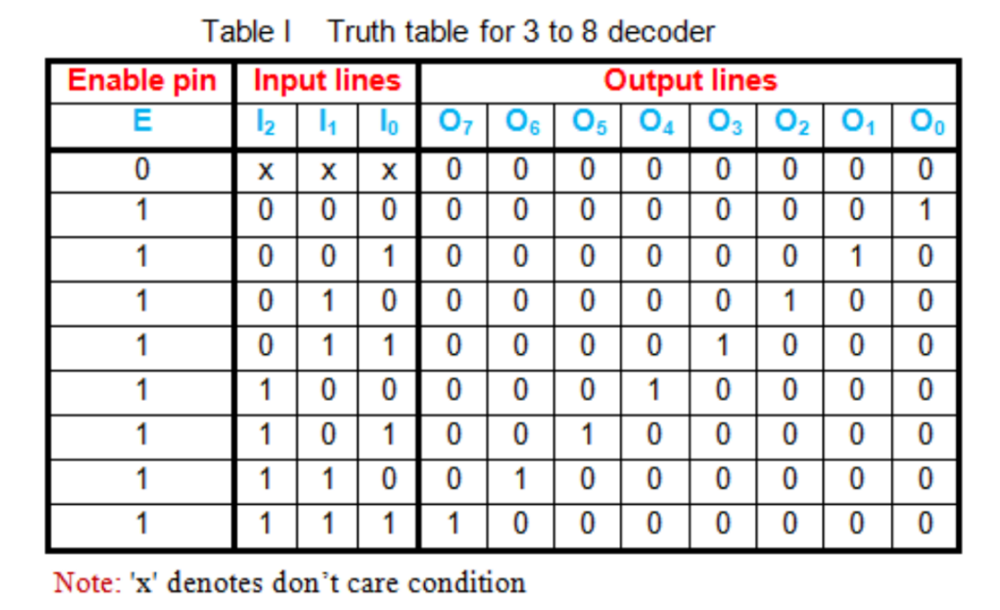
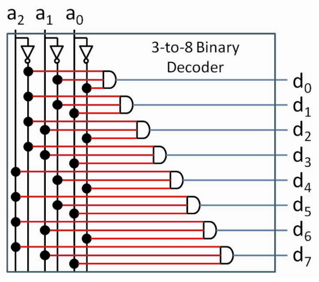

Let's talk number system conversions.
First and foremost- let's think about how we want to interface between number systems. Decoders will essentially take a denser signal, and translate it into its 'expanded form'. In that sense, in order to convert binary to decimal, we would want to make use of a decoder.
In order to think about this, let's take a look at a quick example where we want to convert binary to decimal.
First things first. Suppose you, as a human, wanted to go about converting the number 0b110 to decimal.
How would you do that?
There are plenty of methods, but humor me on this one. Let's think of this in terms of wires. The easiest way to convert this to decimal (digitally) is to assign a wire for each possible output.
That way, if the binary input is 0, we send a signal down the 'zero' wire. If the input comes out to 1, we send a signal down the 'one' wire. If the input is 2, we send a signal down the 'two' wire, and so on.
If we're going to handle three digits of binary input, this would mean that we need 8 output wires, each representing a decimal value from 0 through 7.
Going along the lines of digital logic, let's suppose that we're getting out input binary number via wires as well. Good thing we already figured that out in the previous two sections- in this case, our 3-bit (3-digit) binary number can be represented with three wires.
So, given output wires #0, #1, #2... #7, let's find a way to efficiently wire our 3-bit binary inputs #0, #1, and #2 to give us the output we want.
As always, whenever we have a complex circuit to build and we know the input and output that we want, it's a great idea to build a truth table.
This is a great habit to establish as you build more elaborate circuits.
Below is the truth table for a binary to decimal conversion using three input lines, just as we discussed. You'll see that it's nothing more than a simple number base conversion (the likes of which you've seen in 250) put into a truth table.
It turns out that we can take this truth table and turn it into a circuit pretty systematically, given that we make a few tweaks to our OR gate. Have a look.
I encourage you to take a look at the circuit and provide some inputs. You'll find that it does exactly what you'd expect it to: providing the binary version of a number through the wires labelled a will yield an 'on' signal in the appropriate output wire.
Of course, we are not just limited to 3 binary digits. With a binary to decimal decoder, we are effectively taking n inputs and redirecting it into 2n outputs.
At this point, you may consider the idea that we can generalize this idea to number systems that are not just binary and decimal.
You are absolutely right, but for the purpose of this course, we will not cover it. You are welcome to google things like 'decoder circuit' or 'logic decoder' should you want more information.